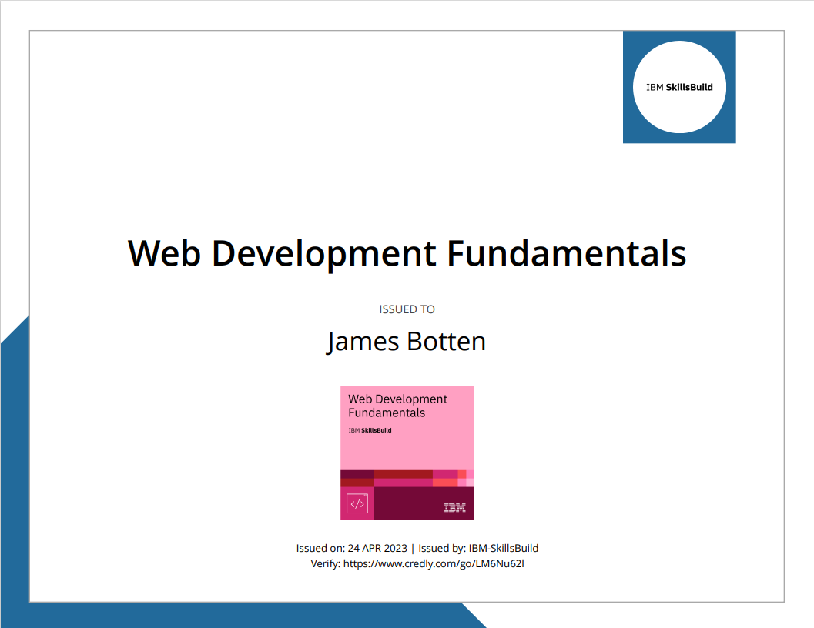

James Botten
(845) 587-1947 | bottenjames107@gmail.com
Skills
-Coding(Java, HTML, CSS) -Film -Video Editing -Photography
-Childcare, -Teaching/Instructing
-Kitchen Cleaning -Fryer Operation -Food Assembly -Food Stocking -Barista -Can lift over 50lbs -Cashiering -Customer Service -POS training -Backroom Stocking -Pricing
Education and Awards
Degree in Science- Computer Science, 2026 | Suny New Paltz
IBM Web Development Badge- Computer Science, 2023 | Suny New Paltz

High School Diploma- General Studies, 2022 | Monroe Woodbury
M-DUB TV: The Morning Show- Hands-on Film Studies, 2021-2022 | Monroe Woodbury
Professional Experience
| Deerkill Camp Counselor (June 2023- August 2023) |
| Vans Associate (July 2022 - Jan 2023) |
Cashier / Sales Associate
My responsibilities consisted of working the cash register, explaining deals/discounts to customers, helping them make an assisted selection of shoes and shirts, making sure shoes and nylon socks were stocked. Clean and close.
Reason for Leaving: Returning to School
| Panera Bread (August 2021-April 2022) |
Cashier/Cook/Drive-Thru
My responsibilities consisted of cooking food, stocking the food lines, taking orders, cashiering, making coffee and cleaning the coffee machines, baristing, customer service, cleaning tables, sweeping, Often working closing shifts.
Reason for Leaving: Medical Issue
| Burger King (June 2020 - Jan 2021) |
My Responsibilities included cooking and preparing food during rush hours, and keeping the kitchen clean. Burger King helped me learn how to work in a fast paced environment.
Reason For Leaving: Pandemic Concerns